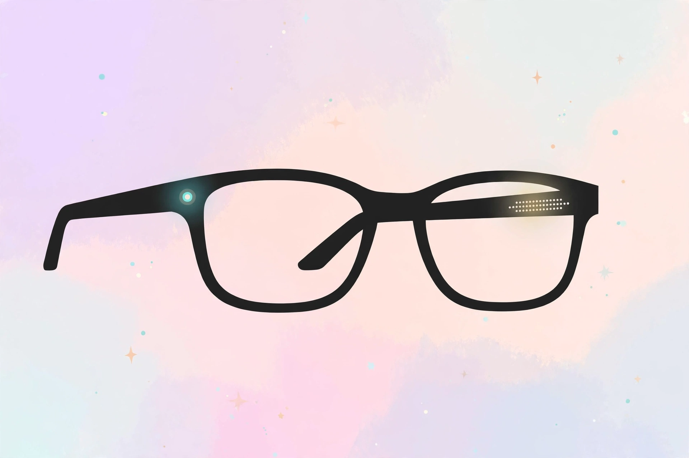

2026년 11월 13일

삼성전자와 구글이 함께 만든 첫 AI 안경 '인텔리전트 아이웨어'의 전체 라인업이 공개됐습니다. 삼성전자는 11월 12일(현지 시간) 미국 뉴욕에서 젠틀몬스터, 워비파커와 협업한 30종을 선보였고, 같은 날 사전 판매를 시작했습니다. 한국과 미국 정식 출시는 12월 10일입니다.
이 안경에는 화면이 없습니다. 대신 카메라와 마이크, 스피커가 들어 있고 구글 AI '제미나이'가 음성으로 도와줍니다. 보이는 것을 AI가 알아보고, 말로 물으면 답해 주는 방식입니다. 칩은 퀄컴 스냅드래곤 AR1 1세대, 운영체제는 안드로이드 XR입니다.
메타가 먼저 자리를 잡은 AI 안경 시장에 삼성·구글 연합이 정식으로 뛰어든 셈입니다. 65만원이 넘는 가격이 만만치는 않지만, 안경이 곧 AI 비서가 되는 시대가 이제 정말 코앞으로 왔습니다. 국내에서는 젠틀몬스터 매장에서 직접 써 보고 살 수 있으니, 사기 전에는 꼭 착용해 보는 게 좋겠습니다.
출처: 비즈니스포스트 — 삼성전자 AI 안경 '인텔리전트 아이웨어' 공개, 12월 한국·미국 출시 · 이데일리 — 한 시간 써도 평소 안경 같았다…삼성·구글·젠몬 AI 안경 써보니